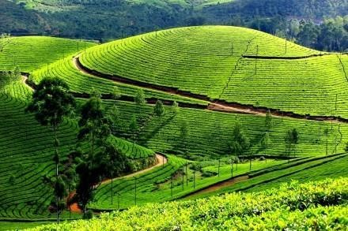
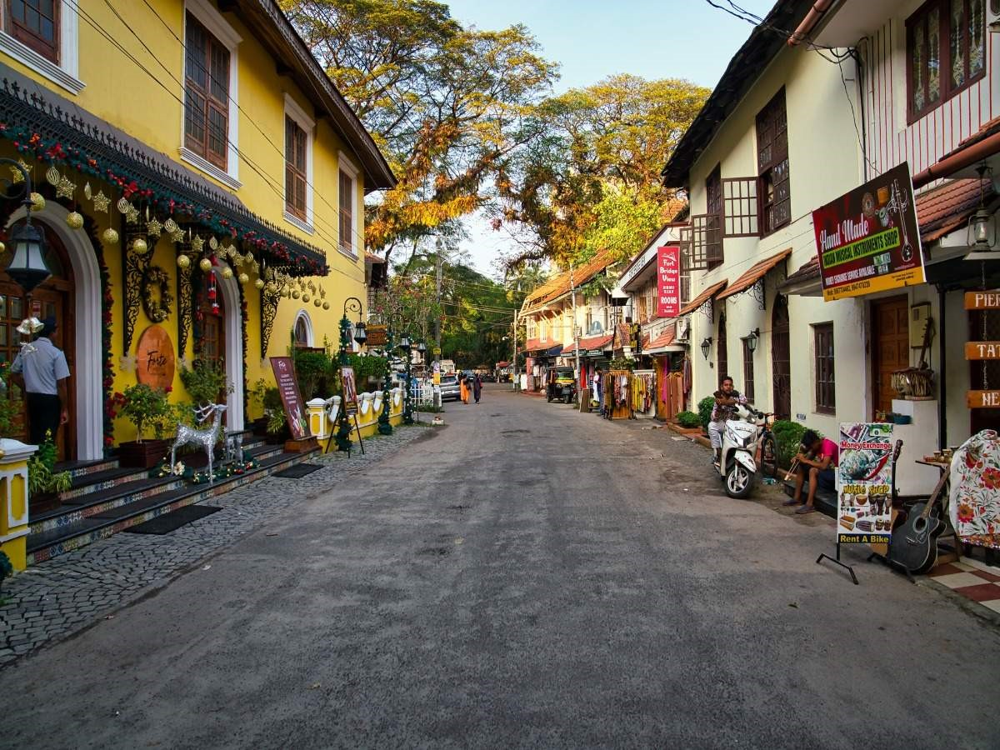
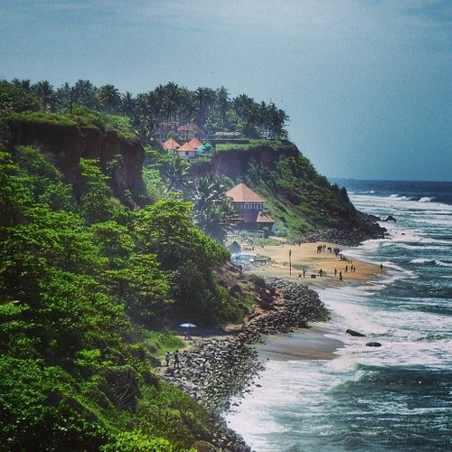
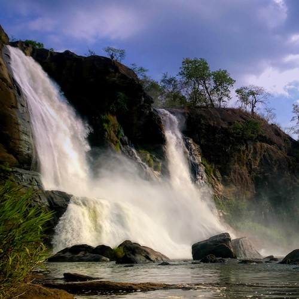
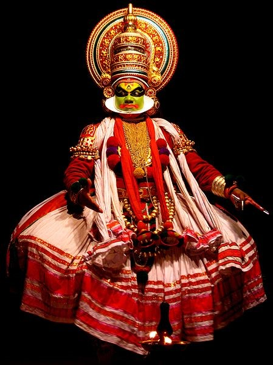
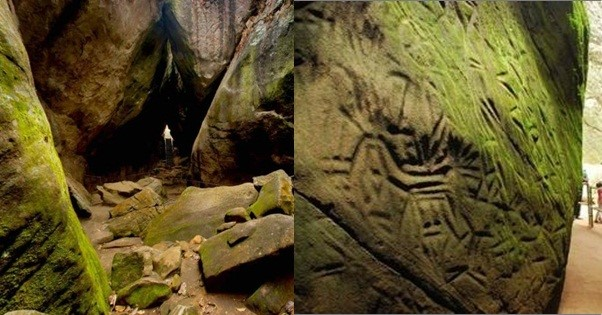
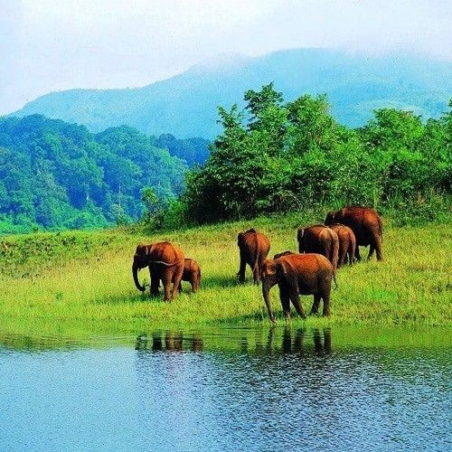

Kerela, or God's Own Country, is a state filled with beautiful scenery. When visting a state like Kerela that
is known for its picturesque landscapes, there are numerous attractions that one must definitely check out!

The Tea Gardens which are located in Munnar, Kerala.
Munnar is known for its beautiful tea estates and is an important hub of tea trade in India. The Lulu Shopping Mall in Kochi, Kerala is one of the largest shopping malls in India.
Inside is South India’s largest ice-skating rink. The city of Alleppey (pronounced Ahl-uh-pay)in Kerala is known for its peaceful Backwaters.
Many go on houseboats in Alleppey to enjoy the scenery as well as Indian cuisine on the comfortable and luxurious boats.

Fort Kochi (pronounced Koh-chee) is known for its beautiful European architecture as it is the first European township in India.
There are many sights to see in Fort Kochi such as the Indo-Portuguese Museum, Santa Cruz Bassicalla, and the Fort Kochi Beach.

The Varkala(pronounced Var-kah-la) Beach is located in Thiruvananthapuram, Kerala.
This beach is a famous attraction as many say its waters are known for having therapeutic and healing qualities.

The Athirappilly (pronounced Ah-thee-rah-pihl-lee) Falls located in Thrissur, Kerala is the largest waterfall in Kerala.
It is also called the Niagara of India as it resembles Niagara Falls in the US.

Kathakali is a form of Indian classical dance that portrays a story through movements and expressions.
Many of these performances can be seen in the town called Varkala.

The Edakkal caves(pronounced ed-ah-kahl) are located in the Ambukthy Hills (pronounced ahm-book-thee) in the Wayanad district of Kerala.
These caves store drawings from the Stone Age while some are even believed go back 7000 years.

The Periyar National Park (pronounced peh-ree-yahr) in Kerala is a wildlife sanctuary possessing endangered plants and animals.
This national park is known for their notable tiger and elephant population.